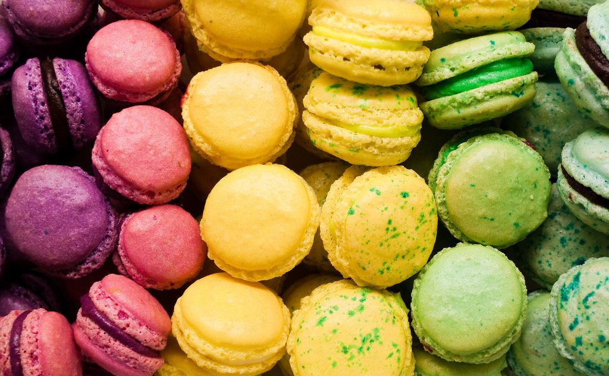

How to Make French Macarons with a Buttercream filling!

French Macrons are a delicious treat to fu-fill your sweet cravings.
These delicious crunchy and smooth cookies are perfect for tea parties, dessert, or a delicious snack! They are fun to make and they make you feel like you are in Paris!
Ingredients
1 cup of almond flour
1 2/3 cup of confectioners' sugar and 3/4 cup (in a separate bowl)
1/4 cup of white sugar
3 egg whites
1/4 cup unsalted butter
1 teaspoon of milk
1/2 teaspoon of pure vanilla extract
Directions
Preheat oven to 285 degrees F (140 degrees C).
Line a baking sheet with parchment paper or a silicone baking mat.
Beat egg white in the bowl of a stand mixer fitted with a whisk attachment until whites are foamy; beat in white sugar and continue beating until egg whites are glossy, fluffy, and hold soft peaks. Sift 1 2/3 cup of confectioners' sugar and almond flour in a separate bowl and quickly fold the almond mixture into the egg whites, about 30 folds.
Spoon a small amount of batter into a plastic bag or piping bag with a small corner cut off and pipe a test disk of batter, about 1 1/2 inches in diameter, onto prepared baking sheet. If the disk of batter holds a peak instead pf flattening immediately, gently fold the batter a few more times and retest.
When batter is mixed enough to flatten immediately into an even disk, spoon into a pastry bag fitted with a plain round tip. Pipe the batter onto the baking sheet or parchment paper in rounds, leaving space between the disks. Let the piped cookies stand out at room temperature until they form a hard skin on top, about 1 hour.
Put cookies in oven and bake until set but not browned, about 10 minutes; let cookies cool completely before filling.
While you cookies are baking, for the buttercream filling you will need to use a hand mixer or a stand mixer, cream butter until soft and smooth.
Add 3/4 cup of powdered sugar, milk, and vanilla extract and mix until light a fluffy.
Transfer the buttercream filling into a piping bag with a round tip. Take your cookies out of the oven and once they are cool, take one half of a cookie a pipe a swirl of filling on it and take another half and place it on top to sandwich them together.
Do this with all the remaining cookies and you're done!